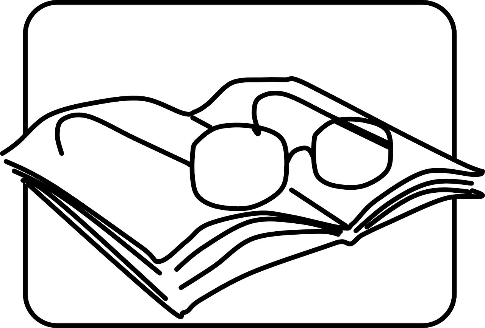
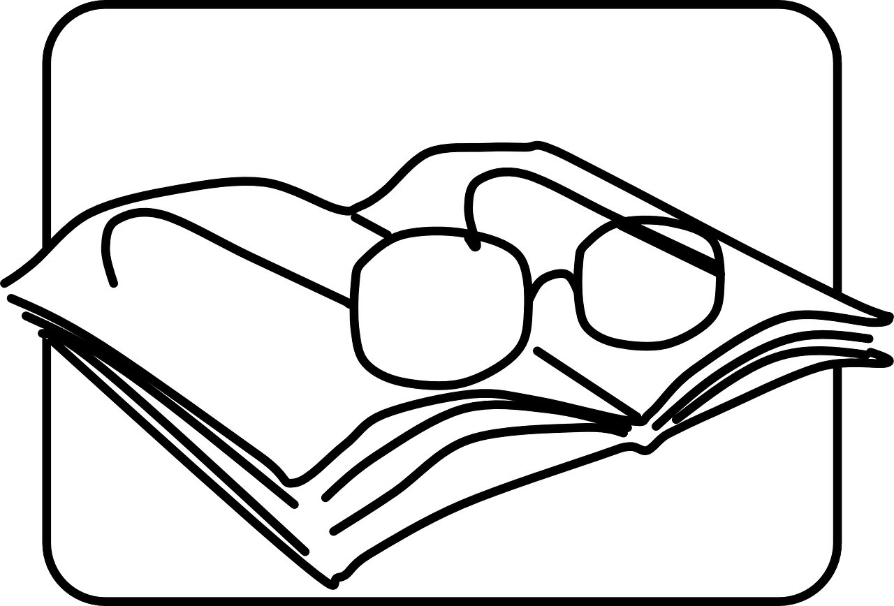

Control de Entregas
clase
Tareas
Esta es la lista de tareas que hemos recibido y reunido en la carpeta que tenemos en Google Drive.

Lecturas
Esta es la colección de controles de lectura que hemos recibido.

Esta es la lista de tareas que hemos recibido y reunido en la carpeta que tenemos en Google Drive.
Esta es la colección de controles de lectura que hemos recibido.
